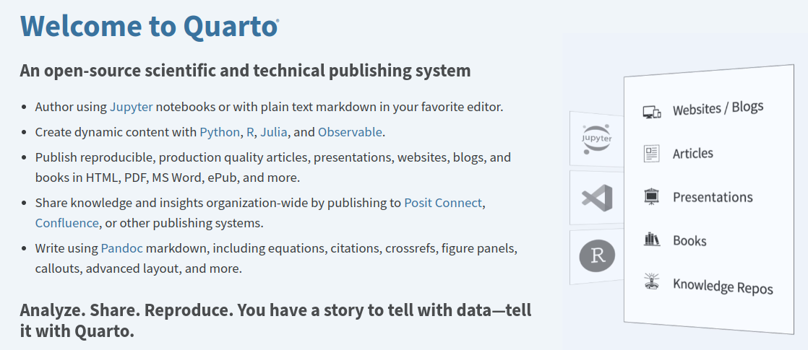
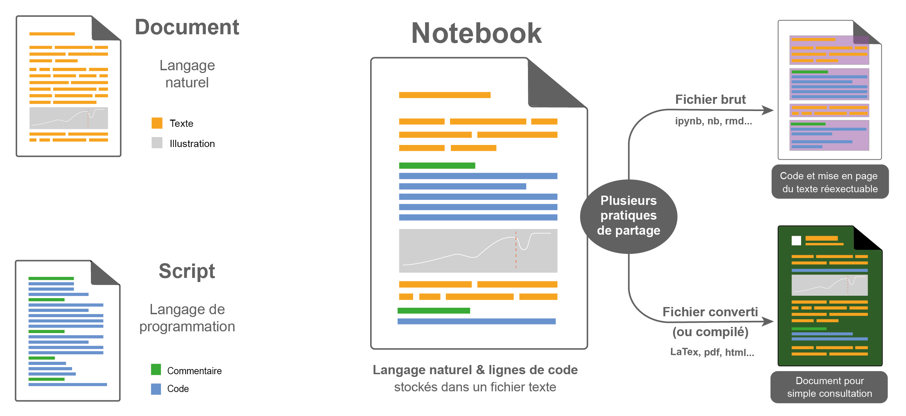
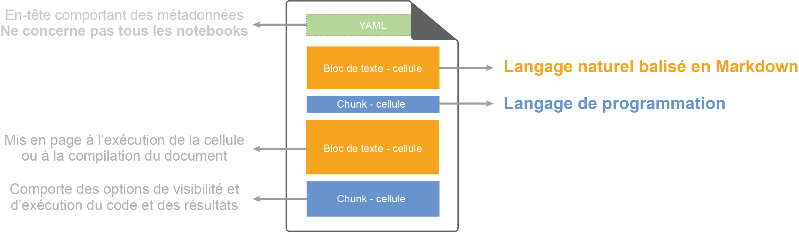
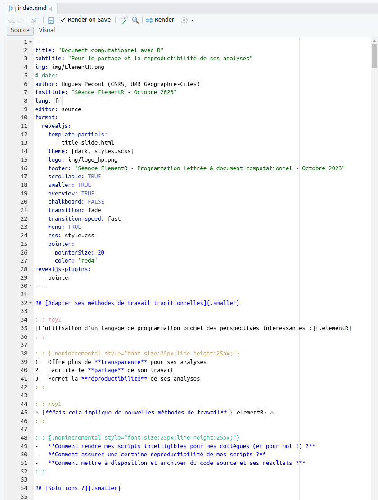
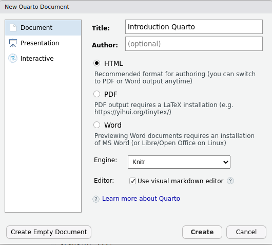
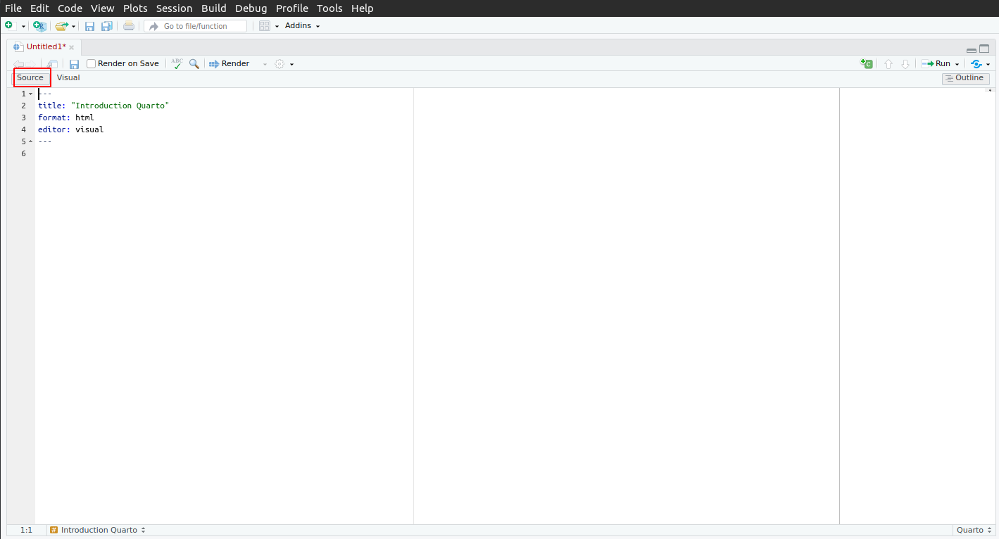
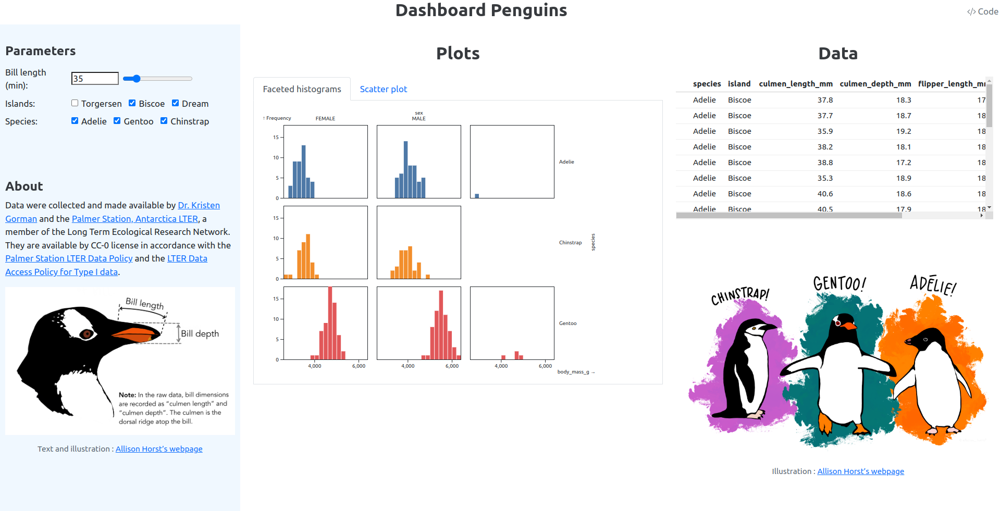

Code
Plot.rectY(penguins,
Plot.stackY(
Plot.binX(
{y: "count"},
{x: "body_mass_g", fill: "species", thresholds: 20})
)
).plot({
marks: [Plot.frame()]
})BUT Science des données - 3ème année - Université Grenoble Alpes
Dans cette séance, nous allons voir comment créer un page Web (rapport, mais également diaporama ou dashboard) avec l’outil Quarto.
Nous verrons comment créer un document Quarto et comment combiner, en son sein, du code R et JavaScript.
Quarto est un système de publication scientifique et technique open-source basé notamment sur Pandoc.

Il permet de créer des documents au format HTML, PDF, Word, etc. à partir de fichiers Markdown contenant du code R, Python, Julia et (Observable) JavaScript.
Il va donc être possible de créer des pages Web interactives avec des graphiques dynamiques (d’ailleurs, les supports des TP 7-8-9-10 ont été crées avec Quarto). Le code R et/ou Python et/ou Julia sera exécuté au moment de la création du document et les résultats seront insérés dans le document final. Le code JavaScript sera exécuté au moment de l’affichage de la page Web.
Quarto permet également de créer des diaporamas (slides) au format HTML ou PDF (c’est notamment le cas des slides des 2 premières séances de ce cours : elles ont été créées avec Quarto et les graphiques ont été créés en JavaScript).
Au final avec Quarto, vous pouvez donc notamment créer :
Cela est rendu possible grâce à de nombreuses fonctionnalités, nécessaires à la création de documents scientifiques et techniques :
\[ P(E) = {n \choose k} p^k (2-p)^{ n-k} \]
Par ailleurs, de nombreux templates (modèles) peuvent être trouvés sur le Web pour améliorer le style des documents créés avec Quarto ou pour créer des types de documents spécifiques (1, 2, 3, 4, etc.).
Quarto s’inscrit dans le mouvement de la programmation lettrée (literate programming) initié par Donald Knuth en 1984.
« Nous devons changer notre attitude traditionnelle envers la construction des programmes : au lieu de considérer que notre tâche principale est de dire à un ordinateur ce qu’il doit faire, appliquons-nous plutôt à expliquer à des êtres humains ce que nous voulons que l’ordinateur fasse. (…)
Celui qui pratique la programmation lettrée peut être vu comme un essayiste, qui s’attache principalement à exposer son sujet dans un style visant à l’excellence. Tel un auteur, il choisit, avec soin, le dictionnaire à la main, les noms de ses variables et en explique la signification pour chacune d’elles. Il cherche donc à obtenir un programme compréhensible parce que ses concepts sont présentés dans le meilleur ordre possible. Pour cela, il utilise un mélange de méthodes formelles et informelles qui se complètent. »Donald Knuth, « Literate Programming », The Computer Journal, British Computer Society, vol. 27, no 2, 1984, p. 97–111
Le paradigme de la programmation lettrée, pensé et mis en oeuvre par Donald Knuth (1977-78), s’éloigne dans son écriture de l’ordonnancement imposé par l’ordinateur, et à la place autorise les développeurs à utiliser un ordre imposé par la logique et le fil de leur pensée.
Un exemple de code simple :
library(ggplot2)
ggplot(data = iris,
aes(x = cut(Sepal.Length, breaks = c(min(Sepal.Length), 5, 6, 7, max(Sepal.Length)),
include.lowest = TRUE, labels = c("Bas","Bas+","Haut","Haut+")))) +
geom_bar() + xlab("") + ylab("") + ggtitle("Répartition par classe") +
theme(plot.title = element_text(size=27), axis.text=element_text(size=19))En version “programmation lettrée” :
#-----------------------------------------------------------------
# Représentation graphique
# de la répartition d'individus
# discrétisés en quatre classes
#
# H. Pecout
# 3 Octobre 2023
#-----------------------------------------------------------------
# Discrétisation la variable Sepal.Length (données iris)
## Statistiques sur la série statistique 'Sepal.Length'
summary(iris$Sepal.Length)
## Histogramme de la distribution
hist(iris$Sepal.Length)
## Choix des bornes de classes (amplitude égale)
bornes_des_classes <- c(min(iris$Sepal.Length), 5, 6, 7,
max(iris$Sepal.Length))
## Choix des noms de classes
nom_des_classes <- c("Trés petites","petites","grandes","Très grandes")
## Discrétisation de la variable 'Sepal.length'
iris$classe <- cut(iris$Sepal.Length,
breaks = bornes_des_classes,
labels = nom_des_classes,
include.lowest = TRUE)
#---------------------------------------------------------------------
# Représentation de la distribution selon la discrétisation
## Bibliothèque pour la représentation graphique
library(ggplot2)
## Représentation graphique de la distribution
ggplot(data = iris, aes(x = classe)) + # Choix des données et de la variable à représenter
geom_bar() + # Choix du type de représentation
xlab("") + # Suppression du nom de l'axe x
ylab("") + # Suppression du nom de l'axe y
ggtitle("Répartition par classe") + # Titre du graphique
theme(plot.title = element_text(size=27), # Taille de la police titre
axis.text=element_text(size=19)) # Taille des labels d'axeIl est donc possible de faire de la programmation lettrée dans n’importe quel type de document…
Mais le document computationnel est l’environnement parfait pour mettre en œuvre ce paradigme.
Un document computationnel permet de combiner du langage naturel et du langage de programmation :
La programmation lettrée et les documents computationnels sont apparus à la même période, celle de l’émergence du concept de recherche reproductible !
Document computationnel ?
Définition : interface de programmation qui permet de combiner des sections en langage naturel et des sections en langage informatique.
En raison de l’évolution et de la diversité des outils logiciels disponibles dans ce domaine, il existe de nombreuses dénominations pour les documents computationnels (notebook, calepin électronique, article exécutable, cahier de programmation, etc.).
Cela reflète la diversité de leurs caractéristiques, de leurs fonctionnalités et des approches différentes de conception.
C’est la raison pour laquelle, les noms propres des différents dispositifs sont souvent utilisés (ex : carnet Jupyter, Observable, Rmarkdown, Quarto…).

Quarto s’inscrit pleinement dans la continuité des carnets Jupyter (Python + désormais de nombreux autres langages), des notebooks Observable (JavaScript) et du Rmarkdown (R). Il unifie et étend leurs fonctionnalités pour permettre lui aussi de créer des documents computationnels (et bien plus encore, comme vu plus haut).
Concrètement, un document Quarto est un fichier Markdown avec une extension .qmd (ou .md).

Il contient :

Quarto est une application logicielle distincte et non un paquetage R ou Python.
Si vous utilisez R et disposez d’une version à jour de RStudio, le logiciel Quarto est intégré. Il est aussi possible d’utiliser RStudio sur Posit Cloud qui dispose également de Quarto.
Si vous utilisez Python ou R dans Visual Studio Code (VS Code), téléchargez l’application logicielle Quarto à partir de la page Quarto - Get Started et l’extension VS Code Quarto séparée.
Notez qu’il est également possible d’éditer des document quarto (.qmd) dans n’importe quel éditeur de code, et d’utiliser la ligne de commande pour compiler le document.
TP-quarto dans votre répertoire de travail

Vous obtenez un fichier contenant les lignes suivantes :
---
title: "Introduction Quarto"
format: html
editor: visual
---Il s’agit de l’entête qui décrit les métadonnées du document (titre, format de sortie, options applicables à l’ensemble du document, etc.). Il est possible de retrouver les options propres au format de sortie HTML dans la documentation. C’est également dans cette section que vous pouvez inclure des feuilles de style CSS, des scripts JavaScript, etc.
Sauvegardez le fichier sous le nom exercice1.qmd dans le dossier TP-quarto que vous avez créé précédemment.
Il est maintenant temps d’ajouter un premier contenu à votre document. Ajoutez les lignes suivantes :
## Première section
Ceci est un premier test !Dans un document Quarto, vous écrivez du code Markdown. Les spécificités du Markdown sont décrites dans la documentation de Quarto. Nous allons en voir quelques-unes dans ce qui suit.
Vous pouvez insérer du code R, Python, Julia ou Observable JavaScript dans des blocs de code.
Ces blocs de code sont délimités par 3 backticks (```) et peuvent être nommés (R, Python, Julia, Observable, etc.) :
```{r}
a <- c(1, 2, 4, 8)
print(a)
``````{python}
def ma_fonction():
return 12
print(ma_fonction())
``````{ojs}
viewof a = slider({
min: 0,
max: 100,
value: 50,
step: 1
})
```
```{ojs}
Plot.plot({
marks: [
Plot.ruleY([a])
]
})
```Essayer d’ajouter le bloc de code R fourni ci-dessus dans votre document et de le compiler. Vous pouvez constater que le code et le résultat de l’exécution du code sont affichés dans le document final.
Il est également possible de spécifier qu’on veut afficher seulement le code, ou uniquement le résultat du bloc de code, etc. (voir ici et ici pour plus de détails) :
#| echo: false : n’affiche pas le code (mais l’exécute et affiche le résultat)#| output: false : exécute le code n’affiche pas le résultat#| eval: false : n’exécute pas le code (mais affiche le code)Testez ces différentes options dans le code que vous avez précédemment ajouté à votre document et recompilez pour voir le résultat.
Le code que nous avons ajouté juste au-dessus ne proposait pas une sortie particulièrement élaborée. Il est toutefois possible de créer des figures et des tableaux depuis votre code R.
Recopiez les codes qui suivent dans votre document et compilez-le.
D’abord, nous chargeons plusieurs bibliothèques R - notez le #| warning: false pour ne pas afficher les messages lors de l’import des bibliothèques :
```{r}
#| warning: false
library(ggplot2)
library(dplyr)
```Utilisons ensuite le jeu de données Iris (il est chargé par défaut) et affichons un résumé des données puis quelques graphiques :
```{r}
summary(iris)
``````{r}
ggplot(iris, aes(x = Sepal.Length, y = Sepal.Width))+
geom_point(aes(color = Species, shape = Species))
``````{r}
ggplot(iris, aes(x = Sepal.Length, y = Sepal.Width))+
geom_point(aes(color = Species))+
geom_smooth(aes(color = Species, fill = Species))+
facet_wrap(~Species, ncol = 3, nrow = 1)+
scale_color_manual(values = c("#00AFBB", "#E7B800", "#FC4E07"))+
scale_fill_manual(values = c("#00AFBB", "#E7B800", "#FC4E07"))
```Il est possible de passer des données depuis R ou Python vers JavaScript.
Cela peut être utile par exemple si vous souhaitez réaliser des analysés statistiques avec R ou Python et afficher les résultats dans un graphique JavaScript.
Ajoutez le code suivant :
On peut passer des données de R (ou Python) vers JavaScript avec la fonction `ojs_define` :
```{r}
ojs_define(irisData = iris)
```Ce code permet de passer les données du jeu de données iris de R vers la variable irisData JavaScript.
Copier le code suivant, et compilez votre document. Regardez ensuite l’objet qui est affiché dans la console JavaScript de votre navigateur.
```{ojs}
//| output: false
console.log(irisData);
```Il est nécessaire de transformer les données vers un format plus propice à l’affichage dans un graphique JavaScript avec Plot :
Transformation des données :
```{ojs}
data = irisData['Species'].map((d, i) => ({
sepalLength: irisData['Sepal.Length'][i],
sepalWidth: irisData['Sepal.Width'][i],
petalLength: irisData['Petal.Length'][i],
petalWidth: irisData['Petal.Width'][i],
species: d,
}))
console.log(data);
```Nous pouvons ensuite définir des visualisations de données, par exemple avec la bibliothèque Plot vue dans les précédents TPs, utilisant ce jeu de données :
```{ojs}
Plot.plot({
inset: 5,
marks: [
Plot.dot(data, {x: "sepalLength", y: "sepalWidth", fill: "species"}),
Plot.frame()
]
})
```De manière générale, vous allez pouvoir utiliser les mêmes éléments que ceux vu dans les TP que nous avons effectué sur la plateforme Observable :
```{ojs}
viewof size = Inputs.range([0, 12], {
label: "Symbol size:",
value: 2,
step: 0.5,
})
```
```{ojs}
Plot.plot({
inset: 5,
marks: [
Plot.dot(data, {x: "sepalLength", y: "sepalWidth", fill: "species", r: size}),
Plot.frame()
]
})
```Il est par exemple possible de spécifier très simplement des layouts pour afficher plusieurs blocs (de texte / code / graphique / etc.) dans un composant comportant plusieurs onglets (on parle de tabset panel) :
Remarquez, dans les exemples qui suivent, la notation ::: {.ma-class} qui permet de spécifier une classe CSS à un conteneur HTML (ici un <div>). Le conteneur est fermé plus bas avec :::.
````markdown
::: {.panel-tabset}
## Plot
```{ojs}
Plot.rectY(penguins,
Plot.stackY(
Plot.binX(
{y: "count"},
{x: "body_mass_g", fill: "species", thresholds: 20})
)
).plot({
marks: [Plot.frame()]
})
```
## Data
```{ojs}
Inputs.table(penguins)
```
:::Résultat :
Plot.rectY(penguins,
Plot.stackY(
Plot.binX(
{y: "count"},
{x: "body_mass_g", fill: "species", thresholds: 20})
)
).plot({
marks: [Plot.frame()]
})Inputs.table(penguins)Il est également possible de grouper différents éléments de saisie dans un sidebar panel ou dans un input panel :
```{ojs}
//| panel: input
//| layout-ncol: 3
viewof ch = Inputs.checkbox(['red', 'green', 'blue', 'black'], {
label: "Passport color:",
value: 'green',
})
viewof type = Inputs.radio(['Passports', 'Circles'], {
label: "Representation:",
value: 'Passports',
})
viewof k = Inputs.range([0, 100], {
label: "Symbol size:",
step: 1
})
```Résultat :
viewof ch = Inputs.checkbox(['red', 'green', 'blue', 'black'], {
label: "Passport color:",
value: 'green',
})
viewof type = Inputs.radio(['Passports', 'Circles'], {
label: "Representation:",
value: 'Passports',
})
viewof k = Inputs.range([0, 100], {
label: "Symbol size:",
step: 1
})Copiez et modifier les différents exemples précédents dans votre document, modifiez les pour voir comment ils fonctionnent, puis compilez-le pour voir le résultat.
Ces différentes fonctionnalités sont puissantes et vont vous permettre de créer des pages Web interactives qui ressemblent en tout point à des dashboards :
Source : https://ee-cist.github.io/CAR2_cartodyn/app/docs/index.html
Le document Quarto créé au début de ce TP doit désormais contenir de nombreux blocs de code R et JavaScript.
Créez un nouveau document Quarto dans le dossier TP-quarto que vous avez créé précédemment (vous référer à la partie “Créer un document quarto avec RStudio” plus haut si besoin).
Ce document va contenir un dashboard simple, avec Quarto et entièrement en Observable JavaScript. Ce dashboard rudimentaire aura la forme suivante :

Copiez le code suivant dans votre nouveau document et compilez-le.
---
title: "Dashboard Penguins"
format:
html:
embed-resources: true
echo: false
code-tools: true
page-layout: custom
include-in-header:
- text: |
<style>
h1 {
text-align: center;
height: 5vh;
}
.quarto-title-block {
margin-block-end: 0 !important;
}
.blue-bg {
background: aliceblue;
height: 95vh;
padding: 10px;
}
figcaption {
text-align: center;
}
</style>
---
::: {.grid}
::: {.g-col-3 .blue-bg}
### Parameters
```{ojs}
viewof bill_length_min = Inputs.range(
[32, 50],
{value: 35, step: 1, label: "Bill length (min):"}
)
viewof islands = Inputs.checkbox(
["Torgersen", "Biscoe", "Dream"],
{ value: ["Torgersen", "Biscoe", "Dream"],
label: "Islands:"
}
)
viewof species = Inputs.checkbox(
["Adelie", "Gentoo", "Chinstrap"],
{ value: ["Adelie", "Gentoo", "Chinstrap"],
label: "Species:"
}
)
filtered = penguins.filter(function(penguin) {
return bill_length_min < penguin.culmen_length_mm &&
islands.includes(penguin.island)
&& species.includes(penguin.species);
});
```
<br /><br />
### About
Data were collected and made available by [Dr. Kristen Gorman](https://www.uaf.edu/cfos/people/faculty/detail/kristen-gorman.php) and the [Palmer Station, Antarctica LTER](https://pal.lternet.edu/), a member of the Long Term Ecological Research Network. They are available by CC-0 license in accordance with the [Palmer Station LTER Data Policy](http://pal.lternet.edu/data/policies) and the [LTER Data Access Policy for Type I data](https://lternet.edu/data-access-policy/).
](https://allisonhorst.github.io/palmerpenguins/reference/figures/culmen_depth.png)
:::
::: {.g-col-5}
# Plots
::: {.panel-tabset}
## Faceted histograms
```{ojs}
// À vous d'écrire le code nécessaire ici !
// Replacer undefined par la création de faceted histograms (cf. screentshot dans le support de cours)
// des données filtrées avec Plot.plot() comme vu lors des premiers TP
undefined
```
## Scatter plot
```{ojs}
// À vous d'écrire le code nécessaire ici !
// Replacer undefined par la création d'un scatter plot
// des données filtrées avec Plot.plot() comme vu lors des premiers TP
undefined
```
:::
:::
::: {.g-col-4}
# Data
```{ojs}
Inputs.table(filtered)
```
<br /><br />
](https://allisonhorst.github.io/palmerpenguins/reference/figures/lter_penguins.png)
:::
::::Les différentes spécificités de ce code (custom page layout, grid layout, tabset panel, etc.) seront discutées à l’oral.